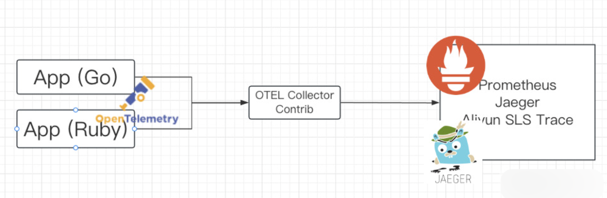
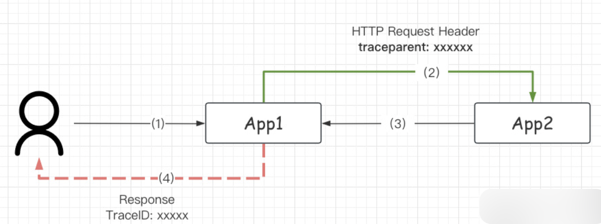
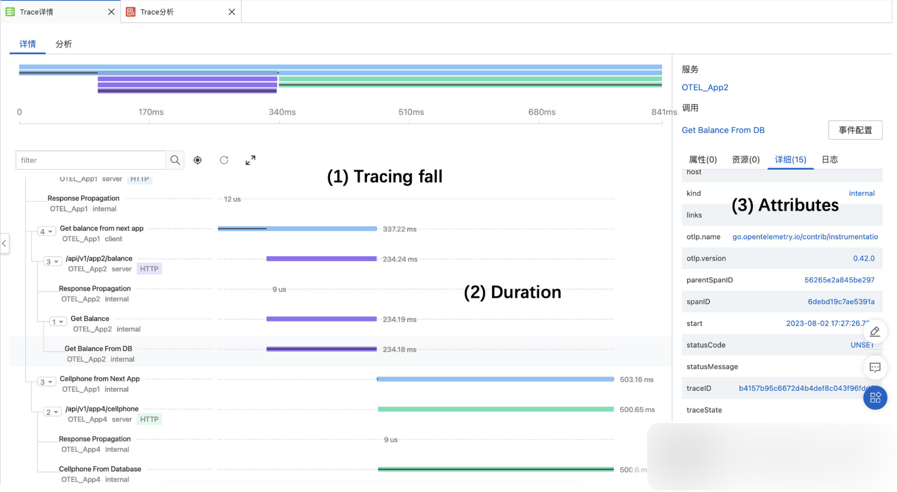
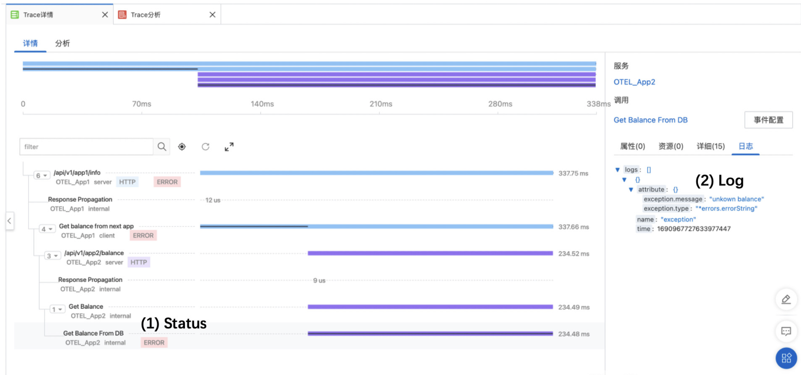

使用 Otel-Collect-Contrib 初始化 trace.Provider
这里使用 app -> collector-contrib 进行转发， 应用不直接对后端的存储。 适配性 更高。

collector-contrib 最常见的两种协议 grpc / http(s)。 传入 endpoint 地址进行初始化 Provider， 参考代码 grpcExporter 和 httpExporter
// Copyright The OpenTelemetry Authors
//
// Licensed under the Apache License, Version 2.0 (the "License");
// you may not use this file except in compliance with the License.
// You may obtain a copy of the License at
//
// http://www.apache.org/licenses/LICENSE-2.0
//
// Unless required by applicable law or agreed to in writing, software
// distributed under the License is distributed on an "AS IS" BASIS,
// WITHOUT WARRANTIES OR CONDITIONS OF ANY KIND, either express or implied.
// See the License for the specific language governing permissions and
// limitations under the License.
// Example using OTLP exporters + collector + third-party backens. For
// information about using the exporter, see:
// https://pkg.go.dev/go.opentelemetry.io/otel/exporters/otlp?tab=doc#example-package-Insecure
package otel
import (
"context"
"fmt"
"net/url"
"strings"
"time"
"google.golang.org/grpc"
"google.golang.org/grpc/credentials/insecure"
"go.opentelemetry.io/otel/exporters/otlp/otlptrace"
"go.opentelemetry.io/otel/exporters/otlp/otlptrace/otlptracegrpc"
"go.opentelemetry.io/otel/exporters/otlp/otlptrace/otlptracehttp"
"go.opentelemetry.io/otel/sdk/resource"
sdktrace "go.opentelemetry.io/otel/sdk/trace"
semconv "go.opentelemetry.io/otel/semconv/v1.12.0"
"go.opentelemetry.io/otel/trace"
)
// Initializes an OTLP exporter, and configures the corresponding trace and
// metric providers.
func initProvider(appname string, endpoint string) (trace.TracerProvider, error) {
ctx := context.Background()
res, err := resource.New(ctx,
resource.WithAttributes(
// the service name used to display traces in backends
semconv.ServiceNameKey.String(appname),
),
)
if err != nil {
return nil, fmt.Errorf("failed to create resource: %w", err)
}
// If the OpenTelemetry Collector is running on a local cluster (minikube or
// microk8s), it should be accessible through the NodePort service at the
// `localhost:30080` endpoint. Otherwise, replace `localhost` with the
// endpoint of your cluster. If you run the app inside k8s, then you can
// probably connect directly to the service through dns.
ctx, cancel := context.WithTimeout(ctx, time.Second)
defer cancel()
if len(endpoint) == 0 {
endpoint = "127.0.0.1:55680"
}
// var err error
exporter, err := traceExporter(ctx, endpoint)
if err != nil {
return nil, fmt.Errorf("failed to create trace exporter: %w", err)
}
// Register the trace exporter with a TracerProvider, using a batch
// span processor to aggregate spans before export.
bsp := sdktrace.NewBatchSpanProcessor(exporter)
tracerProvider := sdktrace.NewTracerProvider(
sdktrace.WithSampler(sdktrace.AlwaysSample()),
sdktrace.WithResource(res),
sdktrace.WithSpanProcessor(bsp),
)
return tracerProvider, nil
}
func traceExporter(ctx context.Context, endpoint string) (*otlptrace.Exporter, error) {
ur, err := url.Parse(endpoint)
if err != nil {
return nil, err
}
var exporter *otlptrace.Exporter
switch strings.ToLower(ur.Scheme) {
case "http", "https":
exporter, err = httpExporter(ctx, ur.Host)
if err != nil {
return nil, err
}
case "grpc":
fallthrough
default:
exporter, err = grpcExpoter(ctx, ur.Host)
if err != nil {
return nil, err
}
}
return exporter, nil
}
// 创建 OTEL 的 GRPC 连接器
func grpcExpoter(ctx context.Context, endpoint string) (*otlptrace.Exporter, error) {
// addr := strings.TrimLeft(endpoint, "grpc://")
conn, err := grpc.DialContext(ctx, endpoint,
// Note the use of insecure transport here. TLS is recommended in production.
grpc.WithTransportCredentials(insecure.NewCredentials()),
grpc.WithBlock(),
// grpc.WithTimeout(5*time.Second),
)
if err != nil {
return nil, fmt.Errorf("failed to create gRPC connection to collector: %w", err)
}
// Set up a trace exporter
traceExporter, err := otlptracegrpc.New(
ctx,
otlptracegrpc.WithGRPCConn(conn),
// otlptracegrpc.WithHeaders(
// map[string]string{
// "authorization": BearerAuthToken,
// "Authorization": BearerAuthToken,
// },
// ),
)
if err != nil {
return nil, fmt.Errorf("failed to create trace exporter: %w", err)
}
return traceExporter, nil
}
func httpExporter(ctx context.Context, endpoint string) (*otlptrace.Exporter, error) {
// endpoint = strings.TrimPrefix(endpoint, "https://")
// endpoint = strings.TrimPrefix(endpoint, "http://")
opts := []otlptracehttp.Option{
otlptracehttp.WithTimeout(5 * time.Second),
otlptracehttp.WithEndpoint(endpoint),
otlptracehttp.WithInsecure(),
// otlptracehttp.WithHeaders(
// map[string]string{
// "authorization": BearerAuthToken,
// "Authorization": BearerAuthToken,
// },
// ),
}
trace, err := otlptracehttp.New(ctx, opts...)
return trace, err
}
使用 Otelgin 接入 TraceProvider
-
第一步初始化好的 trace.Provider 需要通过 Option 的方式传入, 参考代码 otel middleware option
package otel import ( "github.com/gin-gonic/gin" "go.opentelemetry.io/contrib/instrumentation/github.com/gin-gonic/gin/otelgin" ) func Register(appname string, endpoint string) gin.HandlerFunc { opts := []otelgin.Option{ ProviderOption(appname, endpoint), PropagationExtractOption(), } return otelgin.Middleware(appname, opts...) } func ProviderOption(appname string, endpoint string) otelgin.Option { // 1. 注册 Provider provider, err := initProvider(appname, endpoint) if err != nil { panic(err) } return otelgin.WithTracerProvider(provider) } -
在 gin 已经实现了一个官方的 Middleware 支持 OpenTelemetry. 参考代码 gin-gonic/gin/otelgin
package otelgin // import "go.opentelemetry.io/contrib/instrumentation/github.com/gin-gonic/gin/otelgin" import ( "fmt" "github.com/gin-gonic/gin" "go.opentelemetry.io/otel" "go.opentelemetry.io/otel/codes" "go.opentelemetry.io/otel/attribute" "go.opentelemetry.io/otel/propagation" semconv "go.opentelemetry.io/otel/semconv/v1.17.0" "go.opentelemetry.io/otel/semconv/v1.17.0/httpconv" oteltrace "go.opentelemetry.io/otel/trace" ) const ( tracerKey = "otel-go-contrib-tracer" tracerName = "go.opentelemetry.io/contrib/instrumentation/github.com/gin-gonic/gin/otelgin" ) // Middleware returns middleware that will trace incoming requests. // The service parameter should describe the name of the (virtual) // server handling the request. func Middleware(service string, opts ...Option) gin.HandlerFunc { cfg := config{} for _, opt := range opts { opt.apply(&cfg) } if cfg.TracerProvider == nil { cfg.TracerProvider = otel.GetTracerProvider() } tracer := cfg.TracerProvider.Tracer( tracerName, oteltrace.WithInstrumentationVersion(Version()), ) if cfg.Propagators == nil { cfg.Propagators = otel.GetTextMapPropagator() } return func(c *gin.Context) { for _, f := range cfg.Filters { if !f(c.Request) { // Serve the request to the next middleware // if a filter rejects the request. c.Next() return } } c.Set(tracerKey, tracer) savedCtx := c.Request.Context() defer func() { c.Request = c.Request.WithContext(savedCtx) }() ctx := cfg.Propagators.Extract(savedCtx, propagation.HeaderCarrier(c.Request.Header)) opts := []oteltrace.SpanStartOption{ oteltrace.WithAttributes(httpconv.ServerRequest(service, c.Request)...), oteltrace.WithSpanKind(oteltrace.SpanKindServer), } var spanName string if cfg.SpanNameFormatter == nil { spanName = c.FullPath() } else { spanName = cfg.SpanNameFormatter(c.Request) } if spanName == "" { spanName = fmt.Sprintf("HTTP %s route not found", c.Request.Method) } else { rAttr := semconv.HTTPRoute(spanName) opts = append(opts, oteltrace.WithAttributes(rAttr)) } ctx, span := tracer.Start(ctx, spanName, opts...) defer span.End() // pass the span through the request context c.Request = c.Request.WithContext(ctx) // serve the request to the next middleware c.Next() status := c.Writer.Status() span.SetStatus(httpconv.ServerStatus(status)) if status > 0 { span.SetAttributes(semconv.HTTPStatusCode(status)) } if len(c.Errors) > 0 { span.SetAttributes(attribute.String("gin.errors", c.Errors.String())) } } } // HTML will trace the rendering of the template as a child of the // span in the given context. This is a replacement for // gin.Context.HTML function - it invokes the original function after // setting up the span. func HTML(c *gin.Context, code int, name string, obj interface{}) { var tracer oteltrace.Tracer tracerInterface, ok := c.Get(tracerKey) if ok { tracer, ok = tracerInterface.(oteltrace.Tracer) } if !ok { tracer = otel.GetTracerProvider().Tracer( tracerName, oteltrace.WithInstrumentationVersion(Version()), ) } savedContext := c.Request.Context() defer func() { c.Request = c.Request.WithContext(savedContext) }() opt := oteltrace.WithAttributes(attribute.String("go.template", name)) _, span := tracer.Start(savedContext, "gin.renderer.html", opt) defer func() { if r := recover(); r != nil { err := fmt.Errorf("error rendering template:%s: %s", name, r) span.RecordError(err) span.SetStatus(codes.Error, "template failure") span.End() panic(r) } else { span.End() } }() c.HTML(code, name, obj) } -
在 #L66 中， 使用
c.Set(k,v)将 provider 放入了 gin 自己实现的 Context 中。 -
在 #L88-92 中，
tracer.Start启动了第一个 Span， 并将生成的 ctx 放入 Request 中向下传递。 之后我们将从 Request 中取 tracer provider。 -
在 #L73,98, 使用
httpconv.XXXXX方法进行 span 状态设置。httpconv是一个 OpenTelemetry 实现的 标准/模版 方法， 用于处理 http 请求中的各种情况。 可以多跟一下。 -
在 #L71-87 中， 初始化了一些状态。
完成单服务的 Trace 树状结构
在使用的时候， 需要使用 Context 在不同的 函数/方法 之间传递 Provider。 每个 函数/方法 创建自己的 Span， 以此实现 调用的父子关系。
- 在 utils/span.go
中， 封装了一个函数
Span(xxxx)提出 context 中的 provider 并启动tracer.Start(xxx)。
在 #L21 中， 对 ctx 进行了判断， 如果 ctx 是 gin.Context 的话， 就需要从 Request 中携带的 context， 这一点在上诉的 2.4. 中已经说明原因。
额外的进行了一些 公共属性 的设置， 例如运行的主机名。
package utils
import (
"context"
"os"
"github.com/gin-gonic/gin"
"go.opentelemetry.io/otel/attribute"
"go.opentelemetry.io/otel/trace"
"github.com/tangx/opentelemetry-gin-demo/global"
)
func Span(ctx context.Context, spanName string, opts ...trace.SpanStartOption) (spanctx context.Context, span trace.Span) {
value := ctx.Value(global.TracerKey)
tracer, ok := value.(trace.Tracer)
if !ok {
return ctx, nil
}
// gin 特殊
if c, ok := ctx.(*gin.Context); ok {
spanctx, span = tracer.Start(c.Request.Context(), spanName, opts...)
/*
在这里每次注入新的 Attr
1. host
*/
// 1. 从 context 中获取 "public attr"
// attr:=ctx.Value("")
// 2. 注入 public attr
// span.SetAttributes(attr)
spanctx = context.WithValue(spanctx, global.TracerKey, tracer)
// return spanctx, span
} else {
spanctx, span = tracer.Start(ctx, spanName, opts...)
}
// 设置 Attr
attrkv, ok := ctx.Value("attrkv").(map[string]string)
if ok {
SpanSetStringAttr(span, attrkv)
}
SpanSetStringAttr(span, map[string]string{
"server.host": os.Getenv("HOSTNAME"),
})
return spanctx, span
}
func SpanSetStringAttr(span trace.Span, kvs map[string]string) {
attrkv := []attribute.KeyValue{}
for k, v := range kvs {
attrkv = append(attrkv, attribute.KeyValue{
Key: attribute.Key(k),
Value: attribute.StringValue(v),
})
}
span.SetAttributes(attrkv...)
}
func SpanContextWithAttr(ctx context.Context, kv map[string]string) context.Context {
value := ctx.Value("attrkv")
attrkv, ok := value.(map[string]string)
if !ok {
attrkv = make(map[string]string, 0)
}
for k, v := range kv {
attrkv[k] = v
}
return context.WithValue(ctx, "attrkv", attrkv)
}
- 在 apis/user/info.go
中， 通过 context 在不同 函数/方法 之间传递 tracer provider， 每个地方都调用了
Span(xxx)跟踪当前情况。
package user
import (
"context"
"errors"
"fmt"
"net/http"
"os"
"github.com/gin-gonic/gin"
"go.opentelemetry.io/otel/codes"
semconv "go.opentelemetry.io/otel/semconv/v1.12.0"
"go.opentelemetry.io/otel/trace"
"github.com/tangx/opentelemetry-gin-demo/pkg/httpclient"
"github.com/tangx/opentelemetry-gin-demo/pkg/utils"
)
var (
USER_INFO_HOST = os.Getenv("USER_INFO_HOST")
)
// Info 获取用户信息
// https://zhuanlan.zhihu.com/p/608282493
func Info(c *gin.Context) {
username := c.GetHeader("UserName")
if username == "" {
username = "jane"
}
name := fmt.Sprintf("RequestURI: %s", c.Request.RequestURI)
spanctx, span := utils.Span(c, name)
defer span.End()
data, err := info(spanctx, username)
if err != nil {
c.JSON(http.StatusInternalServerError, fmt.Sprintf("Error: %v", err))
return
}
c.JSON(http.StatusOK, data)
}
func info(ctx context.Context, name string) (*UserInfo, error) {
// 注入 attr 属性
ctx = utils.SpanContextWithAttr(ctx, map[string]string{"user.name": name})
// 设置为 consumer kind
opt := trace.WithSpanKind(trace.SpanKindConsumer)
spanctx, span := utils.Span(ctx, "user info integration", opt)
if span != nil {
defer span.End()
}
userinfo := &UserInfo{
Name: name,
}
b, err := balance(spanctx, name)
if err != nil {
return nil, err
}
userinfo.Balance = b
c, err := cellphone(spanctx, name)
if err != nil {
return nil, err
}
userinfo.Cellphone = c
return userinfo, nil
}
// balance get user balance
func balance(ctx context.Context, name string) (int, error) {
ctx = utils.SpanContextWithAttr(ctx, map[string]string{"user.kind": "func.balance"})
_, span := utils.Span(ctx, "user balance")
if span != nil {
defer span.End()
}
switch name {
case "guanyu":
return 100, nil
case "zhangfei":
return 200, nil
}
return 0, errors.New("unknown user")
}
func cellphone(ctx context.Context, name string) (string, error) {
ctx = utils.SpanContextWithAttr(ctx, map[string]string{"user.kind": "func.cellphone"})
ctx, span := utils.Span(ctx, "user cellphone")
if span != nil {
defer span.End()
}
switch name {
case "guanyu":
return "131-1111-2222", nil
// case "zhangfei":
// return "132-2222-3333", nil
}
err := errors.New("unknown user or cellphone not found")
// 提交错误日志
span.RecordError(err)
// 设置状态
span.SetStatus(codes.Error, "unsupport user")
attrs := semconv.HTTPAttributesFromHTTPStatusCode(500)
span.SetAttributes(attrs...)
// 设置属性
// span.SetAttributes(attribute.KeyValue{
// Key: "user.kind",
// Value: attribute.StringValue("user.cellphone"),
// })
if os.Getenv("PORT") != "9099" {
httpclient.GET(ctx, "http://127.0.0.1:9099/api/v1/user/info")
}
return "", err
}
type UserInfo struct {
Name string
Balance int
Cellphone string
}
应答客户端时， 在 Header 中默认添加 TraceID
当有需求的时候（例如出现访问错误）， 需要把 TraceID 返回给用户。 这样用户在报错的时候提供 TraceID 可以快速 debug。

在 otel/response_traceid.go 创建了一个 Gin Middleware， 将 TraceID 从 Context 中提取出来， 并放到 Response Header 中。
其中用到了 propagation 标准库， 简单快捷。
xxxxxxxxxx1 1package otel
import (
"github.com/gin-gonic/gin"
"go.opentelemetry.io/otel/propagation"
"github.com/tangx/opentelemetry-gin-demo/pkg/utils"
)
func ReponseTraceID() gin.HandlerFunc {
return func(c *gin.Context) {
spanctx, span := utils.Span(c, "Response Propagation")
if span == nil {
c.Next()
return
}
defer span.End()
// 4. 应答客户端时， 在 Header 中默认添加 TraceID
traceid := span.SpanContext().TraceID().String()
c.Header("TraceID", traceid)
// 6. 向后传递 Header: traceparent
pp := propagation.NewCompositeTextMapPropagator(
propagation.TraceContext{},
)
carrier := propagation.MapCarrier{}
pp.Inject(spanctx, carrier)
for k, v := range carrier {
c.Header(k, v)
}
}
}go
获取前方传递的 traceparent 信息
在上图 App2 中， 能够拿到 App 传递的 Traceparent header， 这样就保证了接收侧的 TraceID 连贯性。
-
在
otelgin中， 提供了一个 Option 注入， otel/propagation , 使用otelgin.WithPropagators(pptc)package otel import ( "go.opentelemetry.io/contrib/instrumentation/github.com/gin-gonic/gin/otelgin" "go.opentelemetry.io/otel/propagation" ) // PropagationExtractOption 从上游获取 traceparent, tracestate func PropagationExtractOption() otelgin.Option { tc := propagation.TraceContext{} return otelgin.WithPropagators(tc) } -
在 gin 中注册 provider 的时候， 使用 Option 即可, otel/register.go#L12
package otel import ( "github.com/gin-gonic/gin" "go.opentelemetry.io/contrib/instrumentation/github.com/gin-gonic/gin/otelgin" ) func Register(appname string, endpoint string) gin.HandlerFunc { opts := []otelgin.Option{ ProviderOption(appname, endpoint), PropagationExtractOption(), } return otelgin.Middleware(appname, opts...) } func ProviderOption(appname string, endpoint string) otelgin.Option { // 1. 注册 Provider provider, err := initProvider(appname, endpoint) if err != nil { panic(err) } return otelgin.WithTracerProvider(provider) }
向后传递 Header: traceparent
为了保证 TraceID 的连贯性， 除了接收侧（App2）。 在 发送侧 App1 也需要做对应的操作。
从 Context 中读取 TraceParent 并注入到 HTTP Request Header 中。
-
在 utils/carrier.go#L9 中， 通过
propagation标准库将 Header 字段找出来。package utils import ( "context" "go.opentelemetry.io/otel/propagation" ) func MapCarrier(ctx context.Context) map[string]string { // 6. 向后传递 Header: traceparent pp := propagation.NewCompositeTextMapPropagator( propagation.TraceContext{}, ) carrier := propagation.MapCarrier{} pp.Inject(ctx, carrier) return carrier } -
在 httpclient/client.go#L19 中， 将找到的 Header 字段全部放到新创建的 Request Header 中。
package httpclient import ( "context" "io" "net/http" "time" "github.com/tangx/opentelemetry-gin-demo/pkg/utils" ) func GET(ctx context.Context, url string) (string, error) { req, err := http.NewRequestWithContext(ctx, http.MethodGet, url, nil) if err != nil { return "", err } headers := utils.MapCarrier(ctx) for k, v := range headers { req.Header.Set(k, v) } // client := http.DefaultClient client := http.Client{ Timeout: 5 * time.Second, } resp, err := client.Do(req) if err != nil { return "", err } defer resp.Body.Close() data, err := io.ReadAll(resp.Body) if err != nil { return "", err } return string(data), nil }
在 Trace 中添加 Error Log, Status, Attr
标准 API 用法。
span.RecordError提交错误日志span.SetStatus设置 trace span 状态。 氛围 error 和 okspan.SetAttributes设置属性，可以通过属性搜索。 (所有属性被 索引)。
修改 Trace 中的 Kind 类型。 已知 Otelngin 提供的值为 Sever， 默认的值为 internal
在 Tracer 启动的时候传入。 启动之后 Span 不能设置。 可以通过 Kind 类型， 表明当前步骤类型， 以后在 检索/查询 的时候更直观。
- (*) Kind 是标准字段， 是枚举类型。 其中包含
internal, server, client, producer, consumer可以在代码中看到。 - 可以通过
trace.WithSpanKind， 在trace.Start时作为 opt 传入。 之后不能通过 span 设置。
添加自定义属性字段
-
(*) 自定义字段(Attribute)（类似 host）.
-
每个 span 都是独立的。 因此 public attributes 需要在公共函数中注入 utils/span.go
package utils import ( "context" "os" "github.com/gin-gonic/gin" "go.opentelemetry.io/otel/attribute" "go.opentelemetry.io/otel/trace" "github.com/tangx/opentelemetry-gin-demo/global" ) func Span(ctx context.Context, spanName string, opts ...trace.SpanStartOption) (spanctx context.Context, span trace.Span) { value := ctx.Value(global.TracerKey) tracer, ok := value.(trace.Tracer) if !ok { return ctx, nil } // gin 特殊 if c, ok := ctx.(*gin.Context); ok { spanctx, span = tracer.Start(c.Request.Context(), spanName, opts...) /* 在这里每次注入新的 Attr 1. host */ // 1. 从 context 中获取 "public attr" // attr:=ctx.Value("") // 2. 注入 public attr // span.SetAttributes(attr) spanctx = context.WithValue(spanctx, global.TracerKey, tracer) // return spanctx, span } else { spanctx, span = tracer.Start(ctx, spanName, opts...) } // 设置 Attr attrkv, ok := ctx.Value("attrkv").(map[string]string) if ok { SpanSetStringAttr(span, attrkv) } SpanSetStringAttr(span, map[string]string{ "server.host": os.Getenv("HOSTNAME"), }) return spanctx, span } func SpanSetStringAttr(span trace.Span, kvs map[string]string) { attrkv := []attribute.KeyValue{} for k, v := range kvs { attrkv = append(attrkv, attribute.KeyValue{ Key: attribute.Key(k), Value: attribute.StringValue(v), }) } span.SetAttributes(attrkv...) } func SpanContextWithAttr(ctx context.Context, kv map[string]string) context.Context { value := ctx.Value("attrkv") attrkv, ok := value.(map[string]string) if !ok { attrkv = make(map[string]string, 0) } for k, v := range kv { attrkv[k] = v } return context.WithValue(ctx, "attrkv", attrkv) } -
因此使用 Context 进行传递， 在不同的 方法/函数 内进行公共 attr 共享。 （看自己情况实现）
Todo2: Request Tree
nginx/web -> app1----> app2(get balance) -----> app3 (check db) \ \-> app4(get cellphone) ----> app5 (check redis)
正常图示

有 Error 图示
